if (grepl("arc|hoisy", Sys.getenv("USER"))) {
path2data <- paste0("~/Library/CloudStorage/OneDrive-OxfordUniversityClinical",
"ResearchUnit/GitHub/choisy/measles serology/")
}Measles serology
1 Constants
The path to the data folder:
Some labels definitions:
titer_lab <- "titer (IU/L)"
age_lab <- "age (years)"2 Packages
Required packages:
required <- c("sf", "readxl", "stringr", "stringi", "purrr", "tidyr", "magrittr",
"RColorBrewer", "lubridate", "mgcv", "dplyr")Installing those that are not installed yet:
to_install <- required[! required %in% installed.packages()[, "Package"]]
if (length(to_install)) install.packages(to_install)Loading the packages for interactive use:
invisible(sapply(required, library, character.only = TRUE))3 Functions
A function that generates names of a vector of character strings from its content:
set_names2 <- function(x) {
setNames(x, x |>
str_remove("^.*_") |>
str_remove("^.*-") |>
str_remove(".xlsx$"))
}A tuning of the text() function that includes white background to the text:
text2 <- function(x, y, labels, cex = 1, bg = "white", padx = 10, pady = .1, ...) {
w <- strwidth(labels, cex = cex)
h <- strheight(labels, cex = cex)
rect(x - w / 2 - padx, y - h / 2 - pady / 2, x + w / 2 + padx, y + h / 2 + pady / 2,
col = bg, border = NA)
text(x, y, labels, cex = cex, ...)
}Tuning of the rgb() function:
rgb2 <- function(...) rgb(..., maxColorValue = 255)Tunings of the plot() function:
plot2 <- function(...) plot(..., axes = FALSE)
plot3 <- function(...) plot2(..., ann = FALSE)
plot4 <- function(...) plot3(..., type = "n")
plot_titers_empty <- function(...) {
plot2(..., type = "n", xlab = titer_lab, ylab = "density")
}A tuning of the pie() function:
pie2 <- function(x, ...) if (all(x == 0)) plot4(1) else pie(x, ...)A function that pads a data frame of coordinates:
pad <- function(x) {
x <- arrange(x, 1)
xs <- x[[1]]
tibble(c(first(xs), xs, last(xs)), c(0, x[[2]], 0)) |>
setNames(names(x)[1:2])
}Some tunings of the abline() function:
abline2 <- function(...) abline(..., col = "lightgrey")
abline3 <- function(...) abline(..., col = "grey")Some tunings of the mgcv::gam() function:
gam2 <- function(...) mgcv::gam(..., method = "REML")
gam3 <- function(formula, data, ...) gam2(formula, data, family = binomial, ...)A function that retrieves the REML from a GAM model:
get_reml <- function(x) as.numeric(x$gcv.ubre)A function that retrieves the percentage of deviance explained from a GAM model:
dev_explained <- function(x) summary(x)$dev.explA tuning of the segments() function:
segments2 <- function(...) segments(..., col = 2, lwd = 4)A function that extends the tally() function by adding a column of the corresponding proportions:
tally2 <- function(x) {
x |>
tally() |>
mutate(prop = 100 * n / sum(n))
}A tuning of the arrows() function:
arrows2 <- function(...) arrows(..., angle = 90, code = 3)A tuning of the points() function:
points2 <- function(...) points(..., pch = 19)A tuning of the par() function:
par2 <- function(...) par(..., cex = 1)A function that adds the \(y\)-axis on a log scale:
logaxis <- function(side, po10 = 1:5) {
axis(side, log10(unlist(map(10^(po10), ~ .x * 1:10))), NA, tcl = - .25)
axis(side, po10, 10^po10)
}A tuning of the binom.test() function:
binom_test2 <- function(x, n, ...) {
if (n < 1) return(list(estimate = NA, conf.int = rep(NA, 2)))
binom.test(x, n, ...)
}A tuning of the predict() function:
predict2 <- function(...) mgcv::predict.gam(..., type = "response")The following function takes a vector x of densities of probabilities as an input and returns a threshold value above which the values of x belong to the p confidence interval:
ci2th <- function(v, p) {
denominator <- sum(v)
f <- function(th) sum(v[v > th]) / denominator
optimize(function(y) abs(f(y) - p), range(v))$min
}The following function converts a vector x of densities of probabilities into a vector of quantile belonging where the quantiles are defined by the vector breaks:
quantval2quantcat <- function(x, breaks = seq(.95, .05, -.05)) {
# as.numeric(cut(x, c(0, map_dbl(breaks, ci2th, v = x), max(x))))
as.numeric(cut2(x, c(0, map_dbl(breaks, ci2th, v = x), max(x))))
}A function that converts Vietnamese characters into Latin characters:
convert <- function(x) stringi::stri_trans_general(x, "Latin-ASCII")A function that converts the names of a data frame into Latin ASCII:
latin_var_names <- function(df) {
names(df) <- convert(names(df))
df
}A tuning of the lubridate::as_date function:
as_date_excel <- function(...) lubridate::as_date(..., origin = "1899-12-30")A function that converts a date from number of days in character string into an R date object, using Excel’s origin of time:
convert_date <- function(x) x |> as.numeric() |> as_date_excel()A tuning of the readxl::read_excel() function:
read_excel2 <- function(...) readxl::read_excel(..., col_types = "text")Tunings of the min() and max() functions:
min2 <- function(...) min(..., na.rm = TRUE)
max2 <- function(...) max(..., na.rm = TRUE)A function that replaces all the NA of a data frame by 0:
replace_na2 <- function(x) mutate(x, across(everything(), ~ replace_na(.x, 0)))A function that plots an sf object using one of its columns to define the colors:
plot_sf2 <- function(sf, col) {
sf |>
st_geometry() |>
plot(col = sf[[col]])
}A function that adds the column-wise sum of the numeric variables at the bottom of a data frame:
add_colsum <- function(df) {
bind_rows(df, map_dfr(df, function(x) ifelse(is.numeric(x), sum(x), NA)))
}A tuning of the polygon() function:
polygon2 <- function(x, y, col, ...) {
polygon(c(first(x), x, last(x)), c(0, y, 0), col = col, border = col, ...)
}A tuning of hcl.colors():
yellow_red <- function(n) hcl.colors(n, "YlOrRd", rev = TRUE)A tuning of the str_split() function:
str_split2 <- function(...) first(stringr::str_split(...))A tuning of the cut() function:
cut2 <- function(x, ...) {
if (all(is.na(x))) return(x)
cut(x, ...)
}4 Data
4.1 Functions
A hash table to recode sex:
hash_sex <- setNames(rep(c("female", "male"), c(4, 3)),
c("f", "nu", "nnu", "nuu", "m", "n", "nam"))A piece of code common to all the sample collections:
common_data_processing <- function(x) {
x |>
filter_out(if_all(everything(), is.na)) |>
mutate(across(sex, ~ hash_sex[tolower(convert(.x))])) |>
separate_wider_delim(ID, regex("\\s+"), names = c("sID", "cdate", "plate")) |>
mutate(across(titer, as.double))
}A function that generates age groups from age:
make_age_group <- function(x) cut(x, c(0:20, seq(25, 70, 5), 100), right = FALSE)4.2 Data
4.2.1 South
Loading all the excel files of the data folder:
the3files <- paste0(path2data, "south") |>
list.files(full.names = TRUE) |>
set_names2() |>
map(read_excel2, "Marc")The first collection:
first_collection <- the3files$DEC2019 |>
common_data_processing() |>
mutate(date_chr = if_else( grepl("[./]", date_collection), date_collection, NA),
date_num = if_else(!grepl("[./]", date_collection), date_collection, NA),
across(date_num, ~ .x |> as.numeric() |> as_date_excel()),
across(date_chr, dmy),
collection_date = coalesce(date_num, date_chr)) |>
select(participant, hospital, collection, sample_ID, age_group, age, sex,
collection_date, plate, titer, conclusion)Combining the collections:
south <- the3files |>
extract(c("Dec2022", "Apr24")) |>
map(select, -date_collection) |>
bind_rows() |>
common_data_processing() |>
mutate(collection_date = ymd(paste(year_collection, month_collection, day_collection,
sep = "-"))) |>
select(participant, province, hospital, site, collection, sample_ID, age_group, age,
sex, collection_date, plate, titer, conclusion) |>
bind_rows(first_collection) |>
mutate(province = ifelse(is.na(province), hospital, province),
across(province, ~ recode_values(.x, "AG" ~ "An Giang",
"BD" ~ "Binh Dinh",
"DL" ~ "Dak Lak",
"DT" ~ "Dong Thap",
"HC" ~ "HCMC",
"HU" ~ "Hue",
"KG" ~ "Kien Giang",
"KH" ~ "Khanh Hoa",
"QN" ~ "Quang Ngai",
"ST" ~ "Soc Trang",
"Daklak" ~ "Dak Lak",
"HUE" ~ "Hue",
"HCM" ~ "HCMC", default = .x)),
year = year(collection_date),
time_point = recode_values(year, 2019:2020 ~ "T1",
2022:2023 ~ "T2", default = "T3"),
across(age, ~ ifelse(participant == "0158" & province == "Dak Lak" &
collection == "42", "48", .x)),
age_unit = str_remove_all(age, "\\d"),
age2 = as.numeric(str_remove_all(age, "\\D")),
age3 = as.numeric(age), # note: this generate NAs
age4 = ifelse(is.na(age3), ifelse(age_unit %in% c("M", "th"), age2 / 12,
ifelse(age_unit == "ng", age2 / 365, age2)),
age3),
age = ifelse(age4 > 100, year - age4, age4),
age_group = make_age_group(age),
across(conclusion, ~ ifelse(.x == "pós", "Pos", .x))) |>
select(-c(year, age_unit, age2, age3, age4, hospital)) |>
arrange(time_point, province, age_group, collection_date)A hash table to generate site ID from province names:
hash_id <- south |>
filter_out(time_point == "T1") |>
filter(age > 20) |>
select(province, site) |>
unique() |>
with(setNames(site, province))Completing the site ID when missing:
south <- mutate(south, across(site, ~ ifelse(is.na(.x), hash_id[province], .x)))Which gives:
south# A tibble: 5,573 × 13
participant province site collection sample_ID age_group age sex
<chr> <chr> <chr> <chr> <chr> <fct> <dbl> <chr>
1 0033 An Giang 119 42 AG420033 [9,10) 9 female
2 0060 An Giang 119 42 AG420060 [9,10) 9 female
3 0016 An Giang 119 42 AG420016 [14,15) 14 male
4 0036 An Giang 119 42 AG420036 [14,15) 14 female
5 0040 An Giang 119 42 AG420040 [14,15) 14 female
6 0022 An Giang 119 42 AG420022 [15,16) 15 female
7 0037 An Giang 119 42 AG420037 [15,16) 15 female
8 0042 An Giang 119 42 AG420042 [15,16) 15 male
9 0009 An Giang 119 42 AG420009 [16,17) 16 female
10 0013 An Giang 119 42 AG420013 [16,17) 16 female
# ℹ 5,563 more rows
# ℹ 5 more variables: collection_date <date>, plate <chr>, titer <dbl>,
# conclusion <chr>, time_point <chr>4.2.2 North
Hash table for conclusion:
hash_conclusion <- c("Am tinh" = "Neg",
"Duong tinh" = "Pos",
"Nghi ngo" = "Equi",
"Equi" = "Equi",
"Pos" = "Pos",
"Neg" = "Neg",
"pós" = "Pos")Hash table for the variable names of the northern part of the country:
hash_translation <- c("Benh vien" = "hospital",
"Ten benh vien" = "province",
"Lab ID" = "Lab ID",
"Ma benh vien" = "site",
"Dot lay mau" = "collection",
"Ma benh pham" = "participant",
"Study ID" = "sample_ID",
"Ten viet tat" = "initials",
"Do tuoi" = "age",
"Gioi tinh" = "sex",
"Khoa" = "ward",
"Ngay nhan mau" = "reception_date",
"Ngay thu mau" = "collection_date",
"Note" = "Note",
"Ghi chu" = "Note2")A function that translates the names of the variable of a data frame from Vietnamese to English using the hash_translation hash table:
convert_var_names <- function(df) {
names(df) <- hash_translation[names(df)]
df
}Putting the titers data into shape:
titers <- map(c("IgG Serion 2025 Measles 3021 mau.xls",
"IgG Serion 2025 Measles 663 mau.xls"),
~ read_excel(paste0(path2data, "north/titers/", .x))) |>
bind_rows() |>
latin_var_names() |>
select(-STT, -`ID mau`) |>
rename(titer = `Nong do khang the`,
conclusion = `Ket qua`) |>
mutate(across(conclusion, ~ hash_conclusion[convert(.x)])) |>
unique()Generating the data set for the northern part of the country:
north <- c("02FL Tracking sample round 1 to 6 Final.xlsx",
"02FL Tracking sample round 7 to 9.xlsx") |>
rep(2:1) |>
map2(c(1, 2, 1), ~ read_excel2(paste0(path2data, "north/metadata/", .x), .y)) |>
bind_rows() |>
latin_var_names() |>
convert_var_names() |>
mutate(across(province, convert),
across(province, ~ .x |>
str_replace("Viet Tiep" , "Hai Phong") |>
str_replace("Thanh Nhan", "Ha Noi")),
across(collection_date, convert_date),
across(reception_date, ~ as_date(ifelse(.x == "30/10/2020", ymd(20201030),
convert_date(.x)))),
sex = hash_sex[tolower(convert(sex))],
sex = ifelse(sample_ID == "108-09-0357", "female", sex), # correction
unit = convert(str_remove_all(age, "\\d")),
age = as.numeric(str_remove_all(age, "\\D")),
age = ifelse(unit == "ngay", age / 365,
ifelse(unit == "thang", age / 12, age)),
age_group = make_age_group(age)) |>
left_join(titers, y = _, "Lab ID") |>
rename(lab_ID = `Lab ID`) |>
select(participant, province, site, collection, sample_ID, age_group, age, sex,
collection_date, reception_date, lab_ID, titer, conclusion) |>
mutate(time_point = ifelse(collection == "01", "T1", "T2"))Check:
map_int(north, ~ .x |> is.na() |> sum()) participant province site collection sample_ID
0 0 0 0 0
age_group age sex collection_date reception_date
2 2 10 2 1544
lab_ID titer conclusion time_point
0 0 0 0 north |>
group_by(collection) |>
summarize(from_recep = min2(reception_date),
to_recep = max2(reception_date),
n = n(),
NA_coll = sum(is.na(collection_date)))# A tibble: 2 × 5
collection from_recep to_recep n NA_coll
<chr> <date> <date> <int> <int>
1 01 2019-12-09 2020-10-29 1773 1
2 09 2022-08-09 2022-08-09 1909 1Checking inconsistency between dates of collection and reception:
filter(north, reception_date < collection_date)# A tibble: 239 × 14
participant province site collection sample_ID age_group age sex
<chr> <chr> <chr> <chr> <chr> <fct> <dbl> <chr>
1 1184 Phu Tho 111 01 111-01-1184 [16,17) 16 female
2 0606 Hai Phong 027 09 027-09-0606 [2,3) 2 male
3 0616 Hai Phong 027 09 027-09-0616 [4,5) 4 male
4 0628 Hai Phong 027 09 027-09-0628 [6,7) 6 male
5 0631 Hai Phong 027 09 027-09-0631 [7,8) 7 male
6 0637 Hai Phong 027 09 027-09-0637 [8,9) 8 female
7 0638 Hai Phong 027 09 027-09-0638 [8,9) 8 male
8 0643 Hai Phong 027 09 027-09-0643 [9,10) 9 male
9 0644 Hai Phong 027 09 027-09-0644 [9,10) 9 male
10 0645 Hai Phong 027 09 027-09-0645 [9,10) 9 male
# ℹ 229 more rows
# ℹ 6 more variables: collection_date <date>, reception_date <date>,
# lab_ID <chr>, titer <dbl>, conclusion <chr>, time_point <chr>4.2.3 All
dataset <- north |>
mutate(collection_date = as_date(ifelse(is.na(collection_date),
reception_date, collection_date))) |>
select(-reception_date, -lab_ID) |>
bind_rows(select(south, -plate)) |>
filter_out(is.na(age_group))Checking the thresholds:
dataset |>
filter(conclusion == "Neg") |>
pull(titer) |>
max()[1] 149.9753dataset |>
filter(conclusion == "Equi") |>
pull(titer) |>
range()[1] 150.3105 199.9807dataset |>
filter(conclusion == "Pos") |>
pull(titer) |>
min()[1] 200.1092Number of samples per site per time point:
(nb_samples <- dataset |>
group_by(province, time_point) |>
tally() |>
ungroup() |>
pivot_wider(names_from = time_point, values_from = n) |>
replace_na2())# A tibble: 20 × 4
province T1 T2 T3
<chr> <int> <int> <int>
1 An Giang 200 200 200
2 Binh Dinh 200 200 200
3 Dak Lak 200 200 200
4 Dong Thap 200 200 200
5 HCMC 200 186 187
6 Ha Giang 200 200 0
7 Ha Noi 40 200 0
8 Ha Tinh 200 200 0
9 Hai Phong 178 168 0
10 Hue 200 200 200
11 Khanh Hoa 200 200 200
12 Kien Giang 200 0 0
13 Lang Son 192 199 0
14 Lao Cai 200 200 0
15 Phu Tho 199 200 0
16 Quang Ngai 200 200 200
17 Soc Trang 200 200 200
18 Son La 200 200 0
19 Thai Binh 163 141 0
20 Thai Nguyen 200 200 05 Sampling locations
Loading the and modifying sf object of the provinces of Vietnam:
col_map <- c(brewer.pal(3, "Set1"), "lightyellow")
gadm1 <- readRDS(paste0(path2data, "gadm36_VNM_1_sf.rds"))
st_crs(gadm1) <- st_crs(gadm1)
gadm1 <- gadm1 |>
rename(province = VARNAME_1) |>
select(province) |>
mutate(across(province, ~ .x |>
str_replace("Thua Thien Hue", "Hue") |>
str_replace("Ho Chi Minh", "HCMC")),
centroid = geometry |> st_centroid() |> st_coordinates(),
latitude = centroid[, "Y"]) |>
left_join(nb_samples, "province") |>
replace_na2() |>
mutate(col = col_map[(T1 < 1) + (T2 < 1) + (T3 < 1) + 1]) |>
select(province, latitude, col)Plotting the provinces from which samples where collected:
opar <- par(plt = rep(0:1, 2))
plot_sf2(gadm1, "col")
par(opar)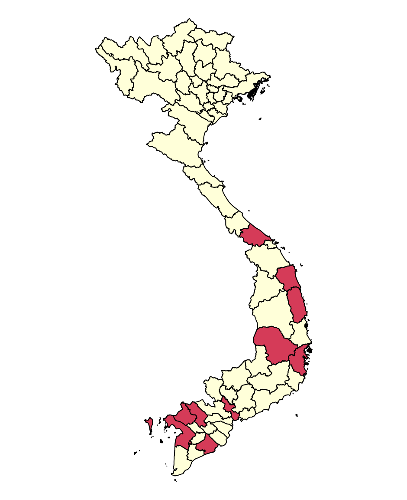
6 Samples metadata
6.1 Sampling intensity
The number of samples per province and time point together with latitude and color:
nb_samples2 <- gadm1 |>
st_drop_geometry() |>
left_join(nb_samples, y = _, "province") |>
arrange(desc(latitude))The order of provinces according to latitude:
province_order <- nb_samples2 |>
mutate(order = row_number()) |>
select(province, order)Number of samples per day and site:
hzl <- 1:20
opar <- par(plt = c(.105, .97, .1, .9))
dataset |>
group_by(province, collection_date) |>
tally() |>
ungroup() |>
mutate(y = max(hzl) + 1 - as.numeric(factor(province, nb_samples2$province))) |>
left_join(nb_samples2, "province") |>
slice_sample(prop = 1) |>
with(plot3(collection_date, y, cex = sqrt(n), xpd = TRUE, col = col))
lb <- 2020:2024
axis(1, ymd(paste(lb, "0101")), lb)
abline3(h = hzl)
text2(rep(ymd(20210701), length(hzl)), rev(hzl), nb_samples2$province)
par(opar)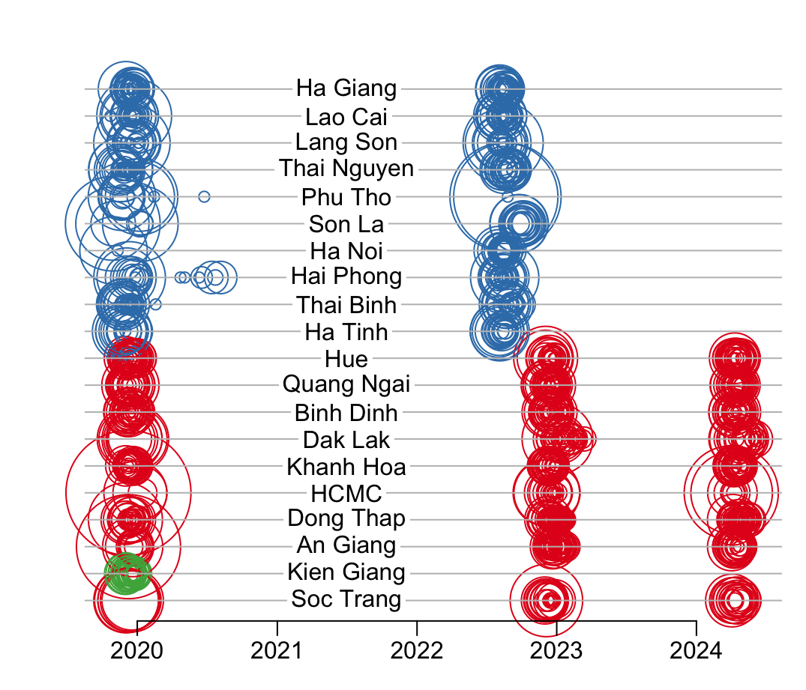
Number of samples:
nb_samples2 |>
select(-c(latitude, col)) |>
mutate(total = T1 + T2 + T3) |>
add_colsum() |>
print(n = Inf)# A tibble: 21 × 5
province T1 T2 T3 total
<chr> <int> <int> <int> <int>
1 Ha Giang 200 200 0 400
2 Lao Cai 200 200 0 400
3 Lang Son 192 199 0 391
4 Thai Nguyen 200 200 0 400
5 Phu Tho 199 200 0 399
6 Son La 200 200 0 400
7 Ha Noi 40 200 0 240
8 Hai Phong 178 168 0 346
9 Thai Binh 163 141 0 304
10 Ha Tinh 200 200 0 400
11 Hue 200 200 200 600
12 Quang Ngai 200 200 200 600
13 Binh Dinh 200 200 200 600
14 Dak Lak 200 200 200 600
15 Khanh Hoa 200 200 200 600
16 HCMC 200 186 187 573
17 Dong Thap 200 200 200 600
18 An Giang 200 200 200 600
19 Kien Giang 200 0 0 200
20 Soc Trang 200 200 200 600
21 <NA> 3772 3694 1787 9253An alternative representation:
opar <- par(plt = c(.0825, .9125, .15, .95))
dataset |>
group_by(collection_date) |>
tally() |>
with(plot(collection_date, n, type = "h", col = "grey", xlab = NA,
ylab = "sampling intensity (nb samples/day)"))
par(new = TRUE)
plot2(NA, xlim = range(dataset$collection_date), ylim = c(0, 600), ann = FALSE)
axis(4)
mtext("cumulative number of samples", 4, 1.5)
dataset |>
left_join(select(nb_samples2, province, col), "province") |>
group_by(province, collection_date) |>
summarise(n = n(), col = unique(col), .groups = "drop_last") |>
group_modify(~ mutate(.x, cumn = cumsum(n))) |>
group_walk(~ with(.x, lines(collection_date, cumn, type = "s", col = col)))
par(opar)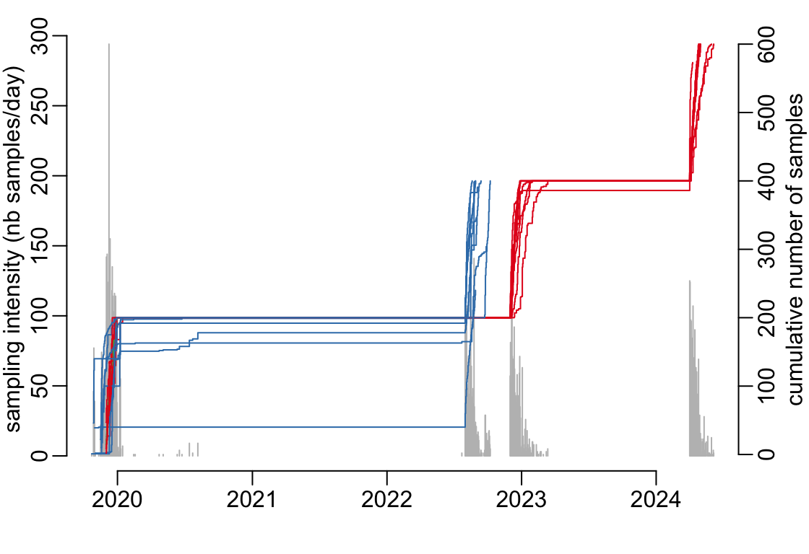
6.2 Age distributions
A tuning of the barplot() function:
barplot2 <- function(x, n1 = 5, n2 = 10, ad = 20, mn = 0, mx = 31, col = 4, ...) {
if (sum(x$Freq) < 1) {
plot4(1)
} else {
with(x, barplot(Freq, space = 0, col = col, ...))
segments2(mn, n1, ad, n1)
segments2(ad, n2, mx, n2)
}
}A function that plots the age distributions of one site:
barplot_row <- function(x, ylim) {
plot4(1); text(1, 1, x$province[1])
x |>
group_by(time_point) |>
group_split() |>
walk2(c(TRUE, FALSE, FALSE), ~ barplot2(.x, ylim = ylim, axes = .y))
}Number of sample per age class, per province, per time point:
tmp <- dataset |>
with(table(age_group, province, time_point)) |>
as.data.frame() |>
left_join(province_order, "province") |>
arrange(order, time_point, age_group)
ylim <- c(0, max(tmp$Freq))
opar <- par2(mfrow = c(20, 4), plt = c(.12, .985, .05, 1))
tmp |>
group_by(order) |>
group_split() |>
walk(~ barplot_row(.x, ylim = ylim))
par(opar)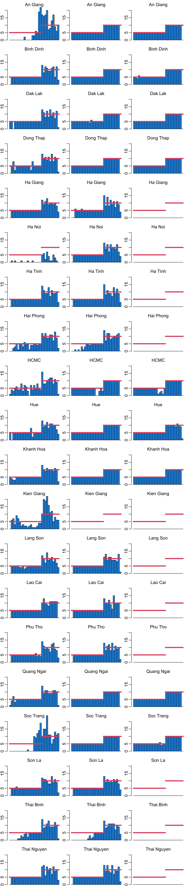
6.3 Gender distribution
A function that plots the sex distributions of one site:
pie_row <- function(x, col = c(rgb2(247, 114, 184), rgb2(62, 146, 247))) {
plot4(1); text(1, 1, x$province[1], xpd = TRUE)
x |>
group_by(time_point) |>
group_split() |>
walk(~ with(.x, pie2(Freq, NA, col = col)))
}Number of sample per sex, per province, per time point:
tmp <- dataset |>
with(table(sex, province, time_point)) |>
as.data.frame() |>
left_join(province_order, "province") |>
arrange(order, time_point, sex)
opar <- par(mfrow = c(20, 4), plt = c(.12, .985, .05, 1))
tmp |>
group_by(order) |>
group_split() |>
walk(pie_row)
par(opar)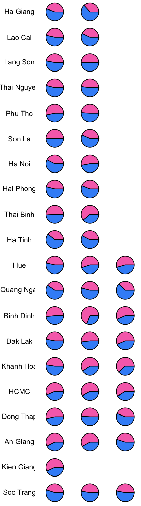
7 Titers
A function that plots a 3-color distribution from a 2-column data frame df that contains the coordinates of the distribution, with \(x\)-values in the first column named x and \(y\)-values in the second column, on a decimal log scale of the \(x\) values:
ptiters <- function(df, main = NULL, th1 = 150, th2 = 200, lb2 = 1:5, ...) {
plot_titers_empty(df, ...)
logaxis(1); axis(2)
df |>
group_by(cut(x, c(-Inf, log10(c(th1, th2)), Inf))) |>
group_map(~ pad(.x)) |>
walk2(c(2, 7, 3), ~ polygon(.x, col = .y, border = NA))
if (! is.null(main)) title(main, line = -.25, cex.main = 1)
}A function that (1) generates the 2-column input data frame of the function ptiters() from the column named titer of the data frame df and then (2) feeds it to the ptiters() function to draw the 3-color distribution:
plot_titers <- function(df, main = NULL, ...) {
df |>
pull(titer) |>
log10() |>
density() |>
extract(1:2) |>
as_tibble() |>
ptiters(main, ...)
}Plotting the distribution of all the titers, across the 3 time points and the 10 sites:
plot_titers(dataset)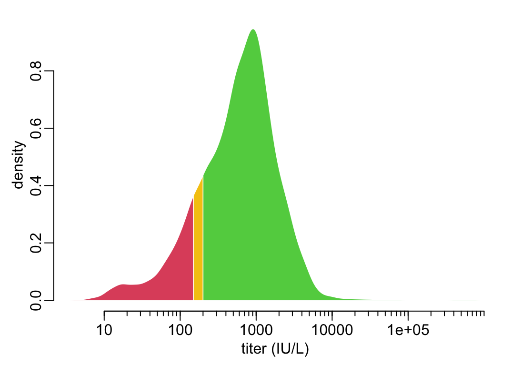
The corresponding proportions in each of the 3 categories of titer values are the following:
dataset |>
group_by(conclusion) |>
tally2()# A tibble: 3 × 3
conclusion n prop
<chr> <int> <dbl>
1 Equi 453 4.90
2 Neg 1290 13.9
3 Pos 7510 81.2 The distributions of all the titers across the 10 sites for each time point separately:
timepoints <- c(paste("Dec", c(2019, 2022)), "Apr 2024")
opar <- par2(mfrow = c(3, 1), plt = c(.13, .97, .18, .95))
dataset |>
group_by(time_point) |>
group_split() |>
walk2(timepoints, ~ plot_titers(.x, .y, xlim = c(.5, 4.5), ylim = c(0, 1.15)))
par(opar)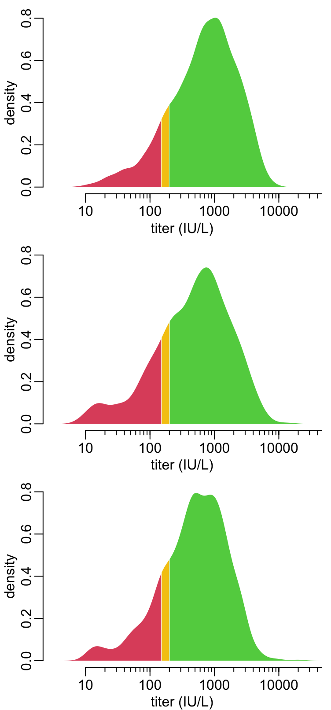
The corresponding proportions in each of the 3 categories of titer values and for each time point are the following:
dataset |>
group_by(time_point, conclusion) |>
tally2() |>
pivot_wider(id_cols = -n, names_from = time_point, values_from = prop)# A tibble: 3 × 4
conclusion T1 T2 T3
<chr> <dbl> <dbl> <dbl>
1 Equi 4.83 4.47 5.93
2 Neg 11.4 15.5 16.2
3 Pos 83.8 80.1 77.8 7.1 Age profile
A function that adds the thresholds values to a plot:
add_thresholds <- function(ths = c(150, 200), col = 2:3) {
abline(h = log10(ths), col = col, lty = 2, lwd = 2)
}A tuning of the density() function:
density2 <- function(x, from, to, n, ...) {
if (length(x) < 2) return(rep(NA, n))
density(x, from = from, to = to, n = n, ...)$y
}A function that plots an image of the distribution of titers (along the \(y\) axis) for all the age classes (on the \(x\) axis):
image_titer_density_age <- function(data, xaxis = TRUE, xlab = age_lab, n = 1024,
min_titer = NULL, max_titer = NULL, buff = TRUE,
breaks = seq(.95, .05, -.05)) {
if (is.null(min_titer)) min_titer <- min(data$titer)
if (is.null(max_titer)) max_titer <- max(data$titer)
if (buff) {
bf <- .04 * (max_titer - min_titer)
min_titer <- min_titer - bf
max_titer <- max_titer + bf
}
data |>
filter(age < 70) |>
group_by(age_group) |>
# group_split() #
# group_map(~ density(.x$titer, from = min_titer, to = max_titer, n = n)$y) |>
group_map(~ density2(.x$titer, min_titer, max_titer, n)) |>
rep(c(rep(1, 20), rep(5, 10))) |> # age classes
map(quantval2quantcat, breaks) |> # this computes the categorical HDI
as.data.frame() |>
as.matrix() |>
t() |>
image(1:70 - .5, seq(min_titer, max_titer, le = n), z = _, axes = FALSE,
xlab = xlab, ylab = titer_lab,
col = yellow_red(length(breaks) + 1))
if (xaxis) axis(1)
logaxis(2)
add_thresholds()
box(bty = "o")
}A function that adds an axis of the ages on the top of a figure:
add_years_on_top <- function(at = 10 * 0:7, line = 1.7) {
axis(3, at)
mtext("age (years)", line = line)
}Let’s plot the distributions of the titers as a function of age:
ymin <- .9
ymax <- 4.3
opar <- par(plt = c(.105, .97, .5, 1 - (1 - .95) / 2 - .15 / 2))
dataset |>
filter_out(age_group == "[70,100)") |>
with(plot(age, log10(titer), col = adjustcolor(4, .2), axes = FALSE, xaxs = "i",
xlim = c(0, 70), ylim = c(ymin, ymax), xpd = TRUE,
xlab = NA, ylab = titer_lab))
logaxis(2); box(bty = "o")
add_years_on_top()
add_thresholds()
par(plt = c(.105, .97, .15 / 2 + (1 - .95) / 2, .5), new = TRUE)
dataset |>
mutate(across(titer, log10)) |>
image_titer_density_age(min_titer = ymin, max_titer = ymax)
par(opar)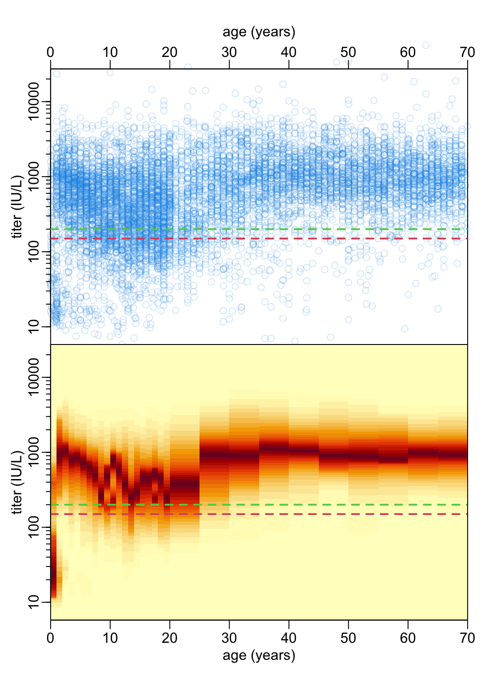
A function that plots the density with a color code according to the high density interval (HDI):
plot_density_HDI <- function(df, breaks = seq(.95, .05, -.05),
n = 1024, from = .9, to = 4.3) {
df <- df |>
with(as_tibble(density(titer, from = from, to = to, n = n)[c("x", "y")])) |>
mutate(cat = as.numeric(cut(y, c(0, map_dbl(breaks, ci2th, v = y), max(y)))),
subcat = cumsum(c(0, diff(cat)) != 0))
add_polygons <- function(ct, cl) {
df |>
filter(cat == ct) |>
group_by(subcat) |>
group_walk(~ polygon2(.x$x, .x$y, col = cl))
}
with(df, plot_titers_empty(x, y))
logaxis(1); axis(2)
walk2(seq_along(c(0, breaks)), yellow_red(length(breaks) + 1),
~ add_polygons(.x, .y))
}Let’s look at the density of titers for the 10-11 year-old for example:
dataset |>
filter(age_group == "[10,11)") |>
mutate(across(titer, log10)) |>
plot_density_HDI()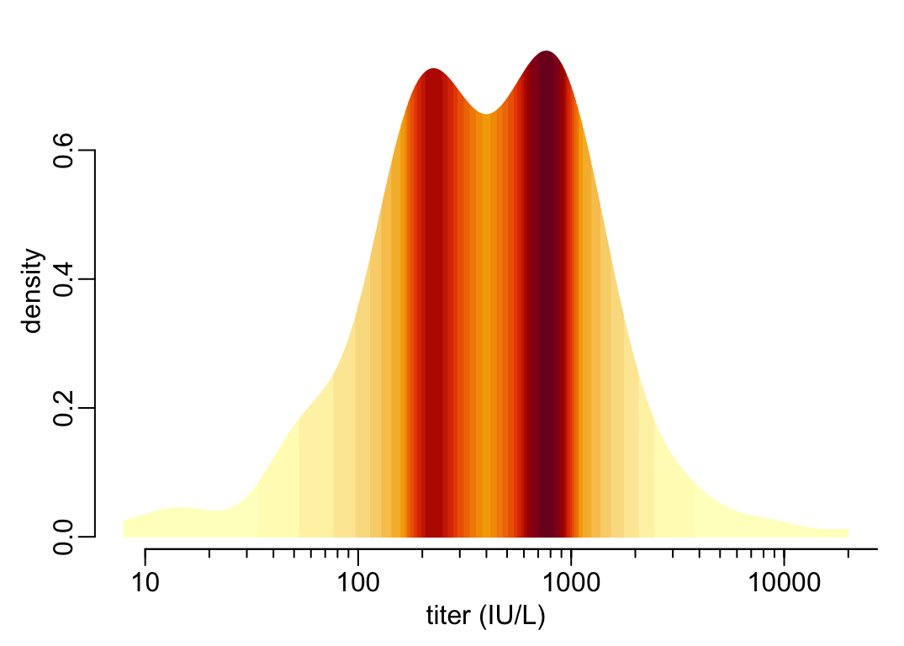
The scale:
image(t(matrix(1:20)), col = yellow_red(20), axes = FALSE)
7.2 Provinces
A function that compares all pairs of provinces in the data frame df:
compare_provinces <- function(df) {
compare_provinces_ <- function(p1, p2) {
df2 <- df |>
filter(province %in% c(p1, p2)) |>
mutate(across(province, as.factor))
list(m0 = gam2(titer ~ s(age), data = df2),
m1 = gam2(titer ~ province + s(age, by = province), data = df2))
}
prov_names <- unique(df$province)
nb_prov <- length(prov_names)
i_vals <- 1:(nb_prov - 1)
out <- vector("list", sum(i_vals))
k <- 1
for(i in i_vals) {
for(j in (i + 1):nb_prov) {
out[[k]] <- compare_provinces_(prov_names[i], prov_names[j])
names(out)[k] <- paste(prov_names[i], prov_names[j], sep = " - ")
k <- k + 1
}
}
out
}A function that agglomerate provinces according to their titer age profile:
agglomerate <- function(df) {
Delta_AICs <- df |>
compare_provinces() |>
map_dbl(~ abs(diff(AIC(.x$m0, .x$m1)[, 2])))
ind <- which.min(Delta_AICs)
if (Delta_AICs[ind] < 10) {
ind_name <- names(ind)
df <- df |>
group_by(province %in% str_split2(ind_name, " - ")) |>
group_split(.keep = FALSE)
df[[2]]$province <- str_replace(ind_name, " - ", " | ")
df <- bind_rows(df)
if (length(unique(df$province)) < 2) return(df)
return(agglomerate(df))
}
return(df)
}Let’s run it on the first time point (takes about 3’00”):
datasetT1 <- dataset |>
filter(time_point == "T1") |>
mutate(across(titer, log10)) |>
agglomerate()#datasetT1 |>
# group_by(province) |>
# group_walk(~ plot_titers(.x))tmp <- datasetT1 |>
mutate(across(titer, log10)) |>
filter(province == "Ha Giang | Hai Phong | Lang Son | Thai Nguyen | Thai Binh | Binh Dinh | Quang Ngai")
image_titer_density_age(tmp, min_titer = .9, max_titer = 4.3)
data <- tmp8 Sero-prevalence
This function takes a data frame that contains at least 2 columns named age_group and titer) and estimates sero-prevalence with confidence interval per age_group where positivity is defined by a titer higher than th:
prepare_data <- function(df, th) {
df |>
with(table(age_group, titer > th)) |>
as.data.frame() |>
pivot_wider(names_from = Var2, values_from = Freq) |>
mutate(tmp = map2(`TRUE`, `TRUE` + `FALSE`, binom_test2) |>
map(extract, c("estimate", "conf.int")) |>
map(unlist) |>
map(setNames, c("p", "l", "u"))) |>
unnest_wider(tmp)
}A tuning of the plot() function:
plotn <- function(...) {
plot(..., type = "n", xaxs = "i", yaxs = "i", ylab = "sero-prevalence")
}This function plots the output of prepare_data():
make_p_age_profile <- function(xs = c(.5:19.5, seq(22.5, 67.5, 5), 75)) {
function(x, main = NULL) {
plotn(xs, rep(.5, length(xs)), ylim = 0:1, xlim = c(0, 80),
xlab = "age classe (years)")
abline2(v = seq(0, 70, 5))
abline2(h = seq(0, 1, .1))
with(x, {
arrows2(xs, l, xs, u, .02, col = 4)
points2(xs, p, col = 4, xpd = TRUE)
})
box(bty = "o")
if (! is.null(main)) title(main, line = -9, cex.main = 1)
}
}
p_age_profile <- make_p_age_profile()A wrapper around the two previous functions:
plot_age_profile <- function(df, th, main = NULL) {
df |>
prepare_data(th) |>
p_age_profile(main)
}Sero-prevalence profile across the 3 time points and the 10 sites:
plot_age_profile(south, 200)
Sero-prevalence profiles across the 10 sites for each of the time points:
opar <- par2(mfrow = c(3, 1), plt = c(.13, .97, .18, .95))
south |>
group_by(time_point) |>
group_split() |>
walk2(timepoints, ~ plot_age_profile(.x, 200, .y))
par(opar)The following function returns a list of data frames of 3 columns too where the number of slots of the list and the number of rows of the data frames are switched.
time_change <- function(x) {
map(1:nrow(first(x)), function(y) map_dfr(x, ~ .x[y, ]))
}This function takes a 3-column (proportion estimate and confidence interval bounds) / 3-row (for 3 time points) data frame that corresponds to a given age group and plots the change in sero-prevalence as a function of time.
time_trend <- function(x, xs = 1:3, col = 4) {
with(x, {
plot4(xs, p, xlim = c(0, 4), ylim = 0:1)
abline2(h = seq(.2, .8, .2))
arrows2(xs, l, xs, u, .05, col = col)
points2(xs, p, col = col)
box(bty = "o")
})
}Showing the change in seroprevalence as a function of time for all the age groups separately:
epsl <- .065
opar <- par(mfrow = c(3, 10), plt = rep(c(epsl, 1 - epsl), 2))
south |>
filter_out(age_group == last(levels(age_group))) |>
group_by(time_point) |>
group_split() |>
map(prepare_data, 200) |>
map(~ .x[-nrow(.x), ]) |>
time_change() |>
walk(time_trend)
par(opar)8.1 GAM
8.1.1 Functions
A tuning of the predict2() function:
predict3 <- function(model, x = seq(0, 70, le = 512), ci = .95) {
bind_cols(tibble(x = x),
model |>
predict2(list(age = x), se.fit = ci) |>
as_tibble())
}A function that adds prediction and confidence interval to a plot:
add_ribbon <- function(pred, col = 4) {
with(pred, {
polygon(c(x, rev(x)), c(ll, rev(ul)), border = NA, col = adjustcolor(col, .2))
lines(x, fit, col = col, lwd = 2)
})
}where pred is an output of the predict3() function and a 4-column data frame with names x, fit, ll and ul. This function plots the predictions of a GAM model:
plot_pred <- function(pred, ylim = NULL, col = 4, ...) {
if (is.null(ylim)) ylim <- 0:1
with(pred, plotn(x, fit, ylim = ylim, xlab = age_lab, ...))
abline2(v = c(.75, 1.5, seq(5, 65, 10)))
abline3(v = seq(10, 60, 10))
add_ribbon(pred, col)
box(bty = "o")
}where pred is an output of the predict3() function. A wrapper around the predict3(), plot_pred() and add_ribbon() functions:
plot_seroprevalences <- function(data, bs = "tp", k = 50, th1 = 200, th2 = 150) {
gam3((titer > th1) ~ s(age, bs = bs, k = k), data) |>
predict3() |>
plot_pred(col = 3)
gam3((titer > th2) ~ s(age, bs = bs, k = k), data) |>
predict3() |>
add_ribbon(2)
abline3(h = 1:9 / 10)
}8.1.2 Analysis
A function that runs 10 different smoothing bases on a GAM model and compare them:
compare_bs <- function(data, th = 200, k = 50, n = 1000) {
tibble(
smoothing_basis = c("thin plate", "thin plate", "Duchon", "cubic regression",
"cubic regression", "cyclic cubic", "B-spline", "P-spline",
"cyclic P-spline", "Gaussian process"),
code = c("tp", "ts", "ds", "cr", "cs", "cc", "bs", "ps", "cp", "gp")) |>
mutate(model = map(code, ~ gam3((titer > th) ~ s(age, bs = .x, k = k), data)),
REML = map_dbl(model, get_reml),
per_dev = map_dbl(model, dev_explained),
AIC = map_dbl(model, AIC),
k_check = map(model, ~ as_tibble(k.check(.x, n.rep = n)))) |>
unnest_wider(k_check)
}Let’s try 10 smoothing bases to see whether one stands out as much better that the others:
models <- compare_bs(south)which gives:
select(models, -model)# A tibble: 10 × 9
smoothing_basis code REML per_dev AIC `k'` edf `k-index` `p-value`
<chr> <chr> <dbl> <dbl> <dbl> <dbl> <dbl> <dbl> <dbl>
1 thin plate tp 2595. 0.109 5152. 49 16.2 0.977 0.543
2 thin plate ts 2600. 0.109 5153. 49 15.6 0.974 0.415
3 Duchon ds 2594. 0.110 5151. 49 16.6 0.985 0.758
4 cubic regression cr 2593. 0.109 5151. 49 15.9 0.984 0.643
5 cubic regression cs 2598. 0.109 5152. 49 15.3 0.959 0.12
6 cyclic cubic cc 2599. 0.108 5161. 48 15.3 0.986 0.816
7 B-spline bs 2593. 0.109 5153. 49 15.9 1.01 0.982
8 P-spline ps 2593. 0.109 5154. 49 15.3 0.962 0.142
9 cyclic P-spline cp 2599. 0.108 5159. 49 15.4 0.977 0.549
10 Gaussian process gp 2598. 0.109 5152. 49 16.2 0.976 0.462Let’s then stick to the thin plate smoothing. Plotting smoothed trends:
models |>
filter(code == "tp") |>
pull(model) |>
first() |>
predict3() |>
plot_pred()
abline3(h = 1:9 / 10)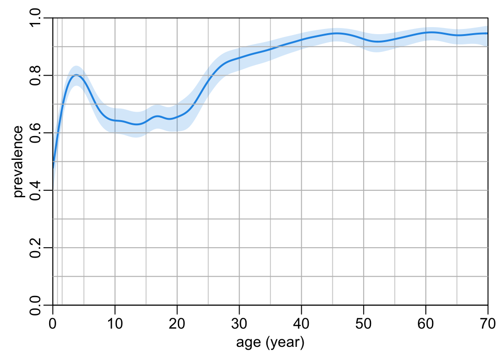
With the two thresholds together:
plot_seroprevalences(south)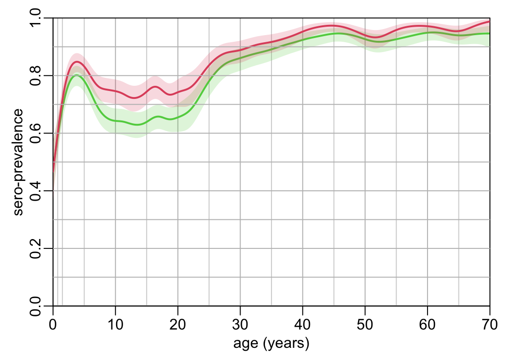
And together with the distributions of titers as a function of age:
opar <- par(plt = c(.105, .97, .5, 1 - (1 - .95) / 2 - .15 / 2))
south |>
mutate(across(titer, log10)) |>
image_titer_density_age(xaxis = FALSE, xlab = NA)
add_years_on_top()
par(plt = c(.105, .97, .15 / 2 + (1 - .95) / 2, .5), new = TRUE)
plot_seroprevalences(south)
par(opar)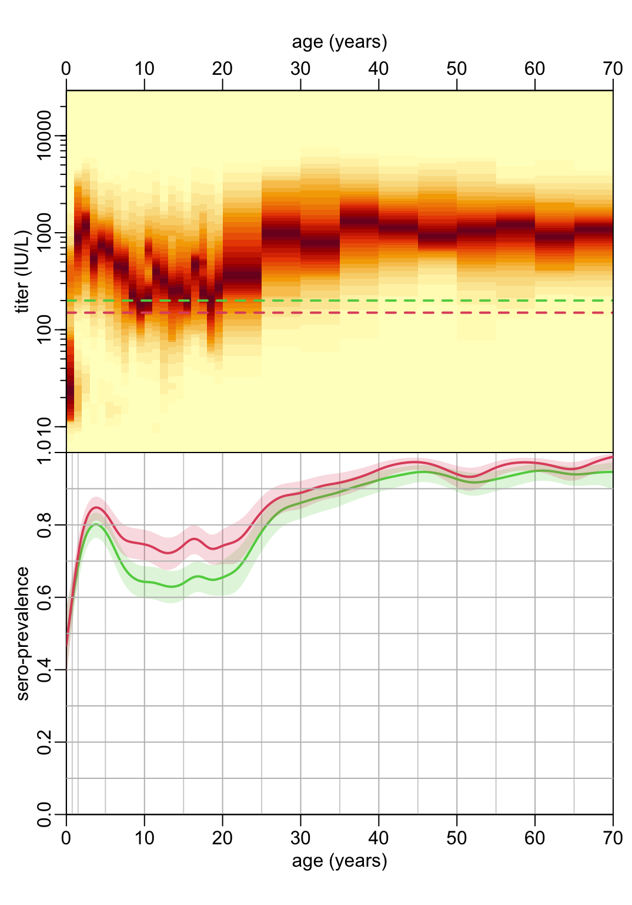
9 TO DO
- run the gam2 model only on the range of age where we have (enough) data
subset_vector <- function(x, th) x[x > th]smoother <- function(df, bs = "tp", k = -1) {
c("p", "l", "u") |>
setNames(c("fit", "ll", "ul")) |>
map(~ gam2(reformulate(paste0('s(age, bs="', bs, '", k=', k, ")"), .x), betar, df))
}gam_predictions <- function(data, th = 200, n = 512, bs = "tp", k = -1) {
data <- data |>
mutate(tmp = age_group |> str_remove("\\[") |> str_remove("\\)")) |>
separate(tmp, c("l", "u")) |>
mutate(across(c(l, u), as.integer))
ndata <- data |>
select(l, u) |>
range() |>
c(n) |>
setNames(c("from", "to", "length")) |>
as.list() |>
do.call(seq, args = _)
data |>
group_by(age_group) |>
summarise(age = mean(age)) |>
left_join(na.exclude(prepare_data(data, th)), "age_group") |>
smoother(bs, k) |>
map(predict2, newdata = list(age = ndata)) |>
as_tibble() |>
bind_cols(tibble(x = ndata)) |>
relocate(x, .before = 1)
}gam_predictions(south)# A tibble: 512 × 4
x fit ll ul
<dbl> <dbl[1d]> <dbl[1d]> <dbl[1d]>
1 0 0.709 0.611 0.794
2 0.196 0.709 0.612 0.793
3 0.391 0.708 0.612 0.792
4 0.587 0.708 0.612 0.792
5 0.783 0.708 0.612 0.791
6 0.978 0.707 0.612 0.791
7 1.17 0.707 0.612 0.790
8 1.37 0.706 0.612 0.789
9 1.57 0.706 0.612 0.789
10 1.76 0.706 0.612 0.788
# ℹ 502 more rowssouth |>
filter(province == "An Giang", time_point == "T1") |>
filter_out(age < 14 | age > 70) |>
gam_predictions() |>
plot_pred()Warning in family$saturated.ll(y, prior.weights, theta): saturated likelihood
may be inaccurate
Warning in family$saturated.ll(y, prior.weights, theta): saturated likelihood
may be inaccurate
9.1
- Model probability of seropositivity between the two thresholds
titer2protection <- function(x) {
ifelse(x < 150, 0, ifelse(x > 200, 1, (x - 150) / 50))
}south |>
mutate(titer2 = titer2protection(titer)) |>
pull(titer2) |>
mean()[1] 0.8152297?dbetalibrary(MASS)
Attaching package: 'MASS'The following object is masked from 'package:dplyr':
selectth <- 150
#prepare_data <- function(df, th) {
south |>
with(table(age_group, titer > th)) |>
as.data.frame() |>
pivot_wider(names_from = Var2, values_from = Freq) |>
mutate(tmp = map2(`TRUE`, `TRUE` + `FALSE`, binom_test2) |>
map(extract, c("estimate", "conf.int")) |>
map(unlist) |>
map(setNames, c("p", "l", "u"))) |>
unnest_wider(tmp)# A tibble: 31 × 6
age_group `FALSE` `TRUE` p l u
<fct> <int> <int> <dbl> <dbl> <dbl>
1 [0,1) 61 46 0.430 0.335 0.529
2 [1,2) 36 87 0.707 0.619 0.786
3 [2,3) 19 108 0.850 0.776 0.907
4 [3,4) 15 107 0.877 0.805 0.930
5 [4,5) 15 120 0.889 0.823 0.936
6 [5,6) 26 105 0.802 0.723 0.866
7 [6,7) 28 101 0.783 0.702 0.851
8 [7,8) 39 91 0.7 0.613 0.777
9 [8,9) 27 99 0.786 0.704 0.854
10 [9,10) 39 92 0.702 0.616 0.779
# ℹ 21 more rows#}#south |>
# filter()model density() in 2D in order to see density of data points not only as a function of age but also as a function of titers
doing clustering on the ANCOVA
seroprevT1T2 <- function(x, th = 200, bs = "tp", k = 50, title = FALSE) {
x |>
filter(time_point == "T1") |>
gam3((titer > th) ~ s(age, bs = bs, k = k), data = _) |>
predict3() |>
plot_pred(col = 2)
x |>
filter(time_point == "T2") |>
gam3((titer > th) ~ s(age, bs = bs, k = k), data = _) |>
predict3() |>
add_ribbon(3)
if (title) x |>
pull(province) |>
first() |>
text(35, .2, labels = _)
}seroprev3timepoints <- function(x, th = 200, bs = "tp", k = 50, title = FALSE) {
seroprevT1T2(x, th, bs, k, title)
x |>
filter(time_point == "T3") |>
gam3((titer > th) ~ s(age, bs = bs, k = k), data = _) |>
predict3() |>
add_ribbon(4)
}seroprev3timepoints(south)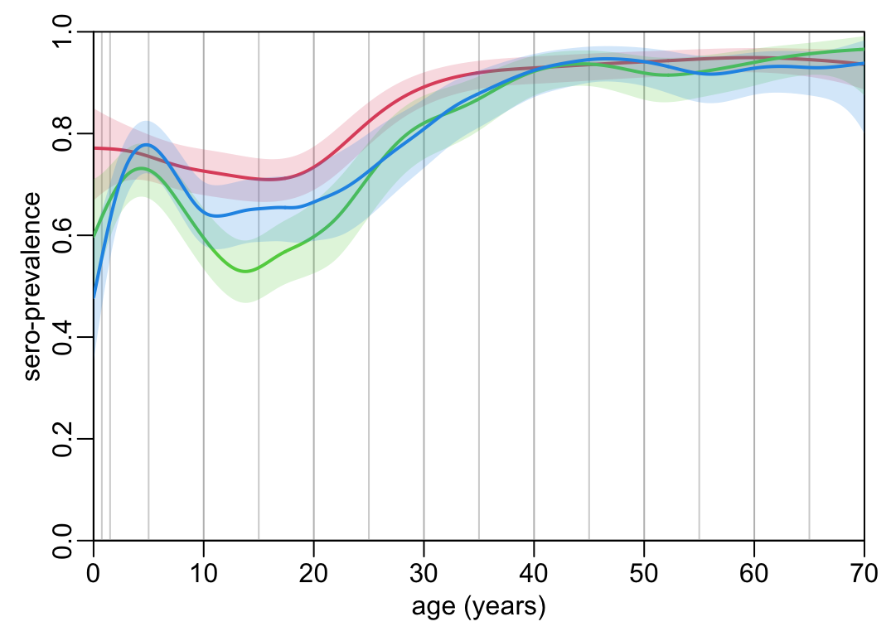
seroprevT1T2(south)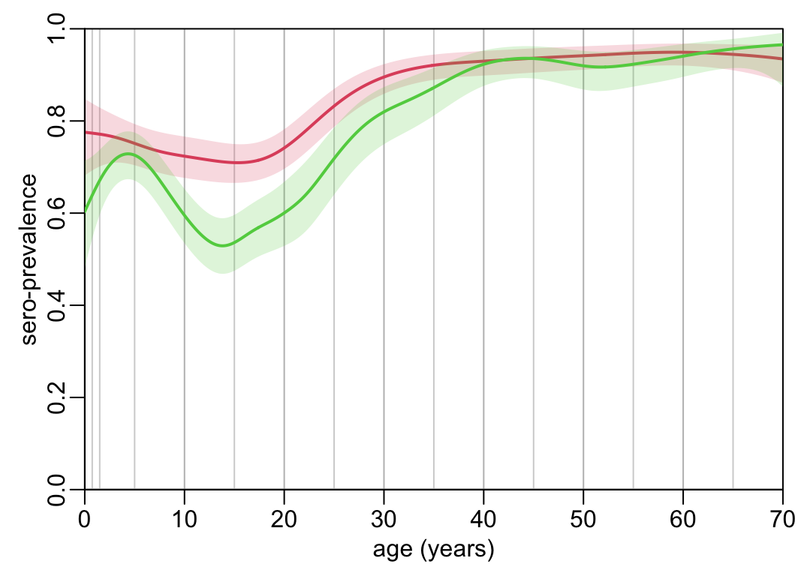
opar <- par(mfrow = c(3,3), plt = c(.12, .97, .18, .95))
south |>
filter_out(province == "Kien Giang") |>
group_by(province) |>
group_split() |>
walk(seroprev3timepoints, title = TRUE)
par(opar)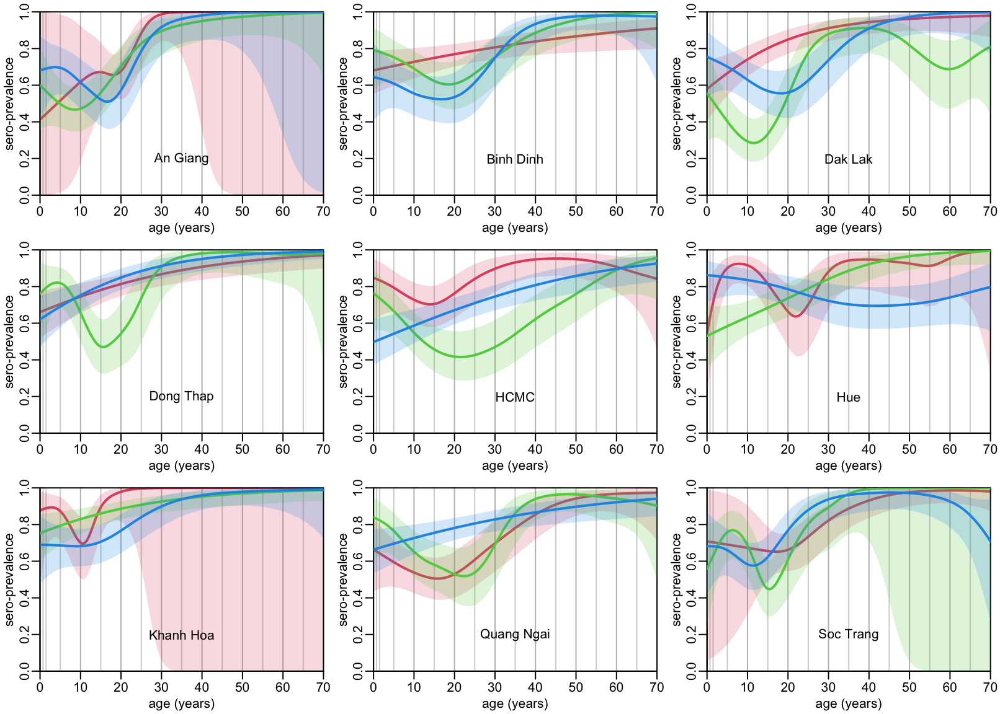
opar <- par(mfrow = c(3,3), plt = c(.12, .97, .18, .95))
south |>
filter_out(province == "Kien Giang") |>
group_by(province) |>
group_split() |>
walk(plot_age_profile, 200)
par(opar)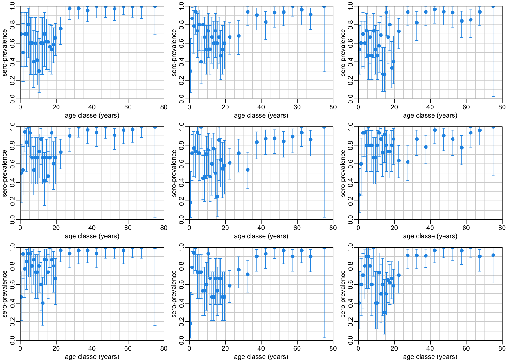
understanding the age profile of titers and seroprevalence. Maybe as an effect of vaccination and waning immunity for vaccination
Looking at 0-1 and 0-5 in order to see whether we see more detail signal as a function of age
test differences between sexes